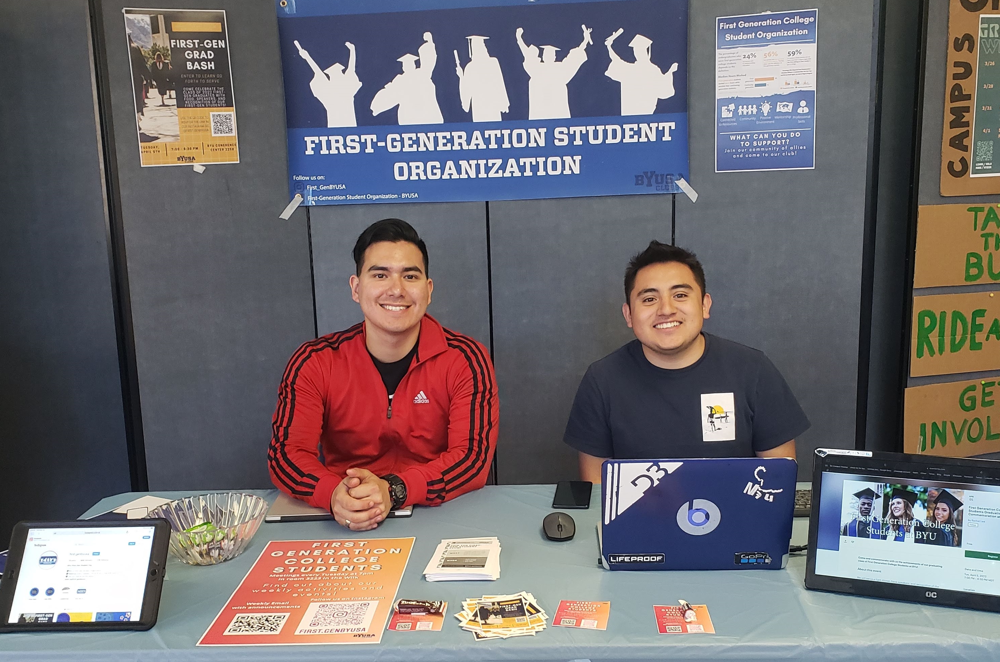

As a current student, I am still learning about different business fields such as marketing, global supply chain, information systems, and others. I have gained new experiences as explored different opportunities such as jobs and clubs.
Education
- New Providence High School Class of 2018
- Brigham Young University
- 2020-current
- Marriot School of Business
Experience
- 6 Brothers Pest Control - Technician
- Formed great customer experience resulting in incredible reviews and customer retention
- Connected with other technicians to accelerate jobs
- Communicated with head technician for instruction and advice for different situations
- Modern Aspect - Intern and Social Media Team Leader
- Coordinated with teammates to research social media marketing strategies
- Initiated deals with different influencers for potential collaboration and promotions
- Increased content engagement by 30%
- BYUSA First Generation Students Organization - Promotion Coordinator
- Planned marketing campaigns for target audience
- Communicated with other organizations for further promotions
- Initiated new event with team with 100+ attendees
Skills
- Key Communicator
- Spanish Proficency
- Organized
- ERP
- Data Security and Privacy
- Database Modeling
- Structured Query Language (SQL)
- IT/IS Project Management
- Flowcharting
- Excel Automation (VBA)
- Tableau (Data Analytics and Visualization)
- Statistics in Excel
- Solver (optimization with Excel)
- Web Development (HTML CCS)
Back to top